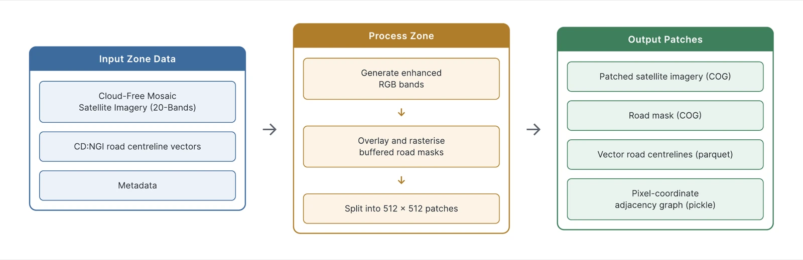

Improving SAM-Road for Road Network Graph Extraction from Medium-Resolution Sentinel Imagery in South Africa
Supervisors: Patrick Marais and Jonathan P. Shock
Overview
Roads can impact ecosystems, by acting as barriers and corridors for wildlife and invasive species and they correlate with urban expansion. Therefore, road monitoring data extracted from current and history imagery is valuable. High-resolution imagery is expensive, but Sentinel-1/2 imagery is free and updates every ~5 days, which makes it better suited to monitoring roads over time.
Additionally, a road network is naturally represented as a graph of intersections (vertices) and roads (edges), so graph-based models can directly predict it instead of post-processing raster masks. This work takes SAM-Road, a graph-based model built for high-resolution imagery, and adapts it to medium-resolution Sentinel imagery.
Goals
- Adapt SAM-Road to Sentinel imageryUpsample the imagery and modify SAM-Road's segmentation component (a geospatial backbone, CNN replacements and mask skeletonisation), then compare RGB against Sentinel-1/2 bands.
- Build the ROSA data pipelineLack of public Sentinel road dataset exists for South Africa. This work builts a dataset spanning 9 biomes and urban, peri-urban and rural regions, with mask and graph labels.
- Integrate into InstaGeoRun the models end to end, from imagery download to a predicted road graph on a web map.
Key findings
Method
1. ROSA dataset


2. Modifying SAM-Road

- Backbone swap: SAM's encoder replaced by TerraMind, a foundation model pretrained on Sentinel data.
- CNN replacement: the segmentation component replaced by U-Net or SGCN, which keep fine local detail.
- Skeletonisation: road masks thinned to one pixel so graph vertices sit on road centrelines.
3. InstaGeo integration
The models run inside InstaGeo web-application. Cloud-free imagery source is obtained from GEE GlobalUrbanMapper data engine - ported from Javascript to Python. Results in an end-to-end pipeline from download to road graph visualisation on a map. See the demo.
Experimental setup
All models utilise the same hyperparameters, upsampling, augumentations and loss function, where it is relavent. Primarly, two experiments, enhanced RGB and 12 bands. Evaluation uses APLS, a graph based metric, which accounts for correctness and connectivity. The best models were trained with 3 seeds and compared with paired Wilcoxon tests.
Results
1. Mixed-Results: Additional bands improve performance. Architecture modifications underperform.
On RGB, no modification beats SAM-Road, as SAM encoder does impressively well. Adding Sentinel-1/2 bands improves every model by 3–4 APLS, resulting in above baseline performance for U-Net and SGCN modifications.
Show the full benchmark table
| Model | Pretraining | Params (M) | GFLOPs | Precision | Recall | F1 | APLS |
|---|---|---|---|---|---|---|---|
| Enhanced RGB | |||||||
| SAM-Road | SA-1B | 87.21 | 69.37 | 61.31 ± 0.71 | 60.06 ± 0.24 | 58.78 ± 0.40 | 47.10 ± 0.43 |
| U-Net | ImageNet | 24.90 | 15.65 | 59.71 | 56.70 | 56.05 | 45.43 |
| SGCN | – | 44.36 | 151.74 | 63.90 | 54.88 | 57.33 | 45.41 |
| TerraMind | TerraMesh | 86.41 | 44.27 | 57.34 | 58.15 | 55.73 | 42.87 |
| 12 bands (enhanced RGB + Sentinel-1/2) | |||||||
| SGCN | – | 44.37 | 152.42 | 65.56 ± 0.48 | 60.17 ± 0.72 | 61.04 ± 0.37 | 49.79 ± 1.55 |
| U-Net | ImageNet | 24.93 | 16.57 | 62.94 ± 0.76 | 60.26 ± 0.67 | 59.85 ± 0.22 | 48.92 ± 0.17 |
| TerraMind | TerraMesh | 88.18 | 88.66 | 62.09 | 59.62 | 58.65 | 45.88 |
2. The Hierarchical CNN Modifications utilise extra bands at negligible cost
CNNs take extra bands by changing only their first layer, so negligible computation cost, while TerraMind's compute doubles, a ViT similar to SAM.
3. SAM-Road Graph Decoder performs better in complex roads in urban areas
The SAM-Road Graph decoder performs better in dense, complex roads in cities. However, hand-crafted post-processing on road segmentation masks is better on long, simple rural roads. We find that a simple skeletonisation post-processing helps the SAM-Road Graph decoder perform better in more rural settings.
4. Fast inference with Sliding Window
Every model processes a tile in under 30 s on a GTX 1060. Without overlapping windows, road connectivity is an issue at window edges and APLS drops significantlly.
5. Examples

 Prediction
Ground truth
Prediction
Ground truth

 Prediction
Ground truth
Prediction
Ground truth
Discussion
Road-graph extraction from free Sentinel imagery is feasible, and we find that additional bands from Sentinel imagery consistently improves results. Although our architecture modifications, in isolation, underperforms against SAM-Road, we can utilise the additional bands with negligible computational cost and outperform our SAM-Road baseline.
Limitations
- Imperfect labels; only the test split was cleaned.
- 2× upsampling (5 m) instead of the usual 4×, due to compute.
- Yearly mosaics hide seasonal and fast road changes.
- Tiles are predicted independently, limiting long-range connectivity.
Future work
- Multi-image super-resolution using Sentinel's frequent revisits.
- Adapting SAM itself to Sentinel-1/2 bands.
- Combining fine-grained and global features for better connectivity.